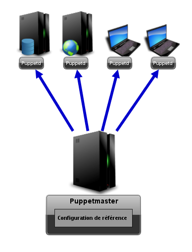

Fonctionnement
Pré-requis
Disposer de plusieurs machines à administrer sinon le gain de temps et d'énergie sera moindre.
Notions en administration système.
Principe

Il fonctionne sur un modèle client-serveur.
Le serveur Puppet est appelé le puppetmaster. C'est sur ce serveur que nous définissons la configuration de référence.
Les clients vont entreprendre les actions nécessaires pour correspondre à l'état définit grâce au démon Puppetd.
Puppet écrit en ruby, décrit les actions à faire, et non les commandes. C'est le démon ( propre à chaque système d'exploitation) qui va exécuter les actions, c'est pourquoi les clients peuvent aussi bien être Linux, Solaris, Windows etc.